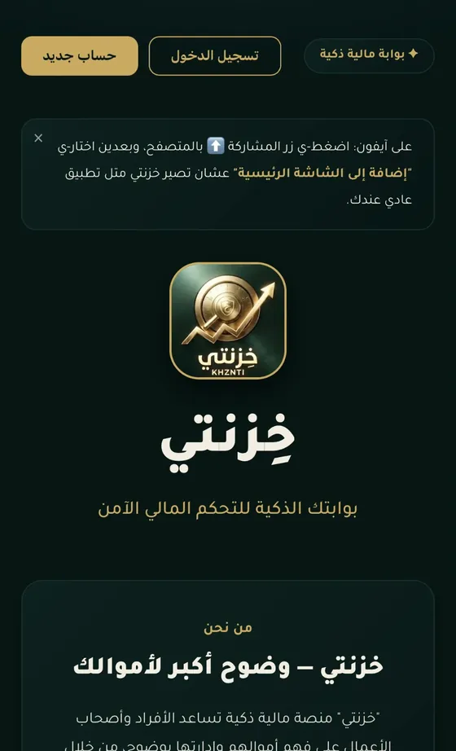
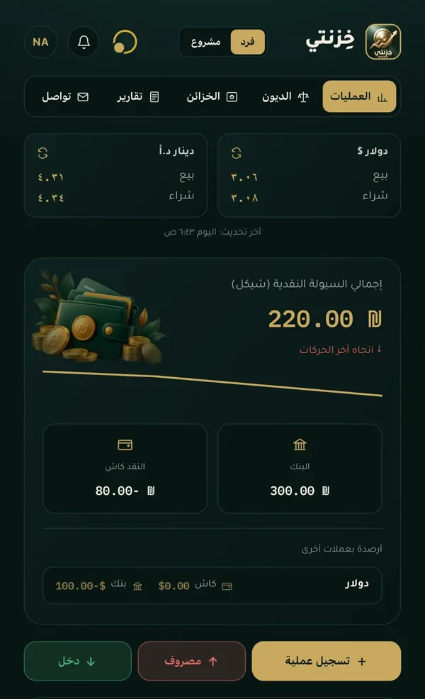

01 / 03
خزنتي
إدارة أبسط. صورة أوضح.
منتج للوضوح المالي للأفراد والمشاريع الصغيرة، يجمع الحركة اليومية، الكاش والبنك، الديون، المخزون والتقارير ضمن تجربة واحدة منظّمة.


- THE PROBLEM
- المعلومة المالية اليومية موجودة، بس غالبًا مفرّقة بأكثر من مكان — فالفرد أو صاحب المشروع ما بيشوفها كصورة وحدة واضحة.
- THE SOLUTION
- حساب واحد بوضعين، فرد ومشروع: بتسجّل العملية مرة وحدة، وأثرها بيظهر بالرصيد، المخزون، الديون والتقارير.
- WHAT WE BUILT
- تطبيق حقيقي، متصل بسحابة فعلية، كل مستخدم يشوف بياناته الخاصة بس — جاهز يستخدمه ناس حقيقيين اليوم.